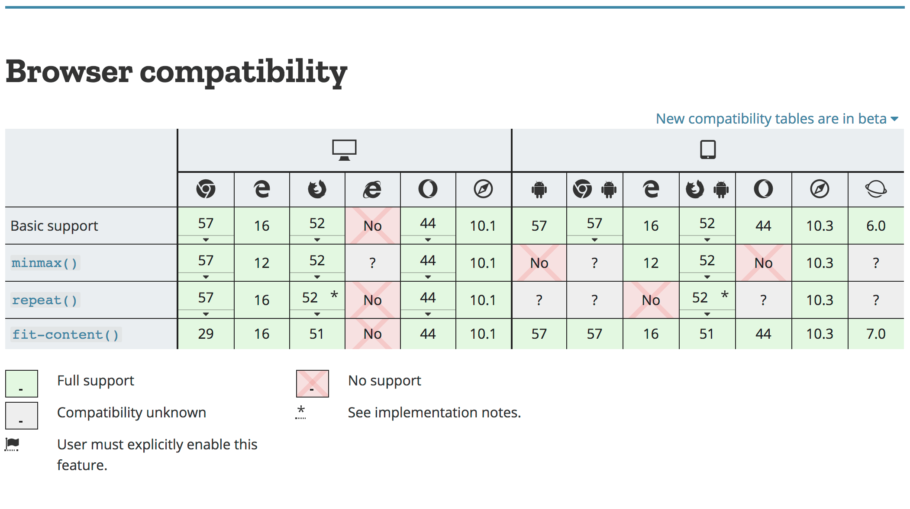

{{LearnSidebar}}
{{PreviousMenuNext(“Learn/CSS/CSS_layout/Legacy_Layout_methods”, “Learn/CSS/CSS_layout/Fundamental_Layout_Comprehension”, “Learn/CSS/CSS_layout”)}}
In this module, we recommend using Flexbox and Grid as the main layout methods for your designs. However, there will be visitors to your site who use older browsers, or browsers which do not support the methods you have used. This will always be the case on the web — as new features are developed, different browsers will prioritise different things. This article explains how to use modern web techniques without locking out users of older technology.
| Prerequisites: | HTML basics (study Introduction to HTML), and an idea of how CSS works (study Introduction to CSS and Styling boxes.) |
|---|---|
| Objective: | To understand how to provide support for your layouts on older browsers that might not support the features you want to use. |
Every website is different in terms of target audience. Before deciding on the approach to take, find out the number of visitors coming to your site using older browsers. This is straightforward if you have an existing website which you are adding to or replacing, as you probably have analytics available which can tell you the technology people are using. If you have no analytics or this is a brand new site, then there are sites such as Statcounter that can provide statistics filtered by location.
You should also consider the type of devices and the way people use your site, for example, you may expect a higher than an average number of mobile devices. Accessibility and people using assistive technology should always be considered, but for some sites that may be even more critical. In my experience, developers are often very worried about the experience of 1% of users in an old version of Internet Explorer, while not considering at all the far greater number who have accessibility needs.
Once you know the browsers that come to your site, you can assess any technology that you want to use against how well it is supported and how easily you can provide an alternative for visitors who do not have that technology available. We are trying to make this easy for you at MDN, by providing browser compatibility information on each page detailing a CSS property. For example, take a look at the page for {{cssxref(“grid-template-columns”)}}. At the bottom of this page is a table, which lists major browsers along with the version they began supporting this property.

Another popular way to find out about how well a feature is supported is the Can I Use website. This site lists the majority of Web Platform features with information about their browser support status. You can view usage statistics by location — useful if you work on a site that has users mostly for a specific area of the world. You can even link your Google Analytics account to get analysis based on your user data.
Understanding the technology your users have, and the support for things you might want to use puts you in a good place to make all of your decisions and to know how best to support all of your users.
A website can’t possibly look the same in all browsers, because some of your users will be viewing the site on a phone and others on a large desktop screen. Similarly, some of your users will have an old browser version, and others the latest browser. Some of your users might be hearing your content read out to them by a screen reader, or have zoomed in on the page to be able to read it. Supporting everyone means serving a version of your content that is designed defensively, so that it will look great on modern browsers, but will still be usable at a basic level for users of older browsers.
A basic level of support comes from structuring your content well so that the normal flow of your page makes sense. A user with a very limited feature phone might not get much of your CSS, but the content will flow in a way that makes reading easy. Therefore, a well-structured HTML document should always be your starting point. If you remove your stylesheet, does your content make sense?
One option is to leave this plain view of the site as the fallback for people using very old or limited browsers. If you have a tiny number of people coming to the site in these browsers it may not make commercial sense to pour time into trying to give them a similar experience to people on modern browsers. It would be better to spend the time on things which make the site more accessible, thus serving far more users. There is a middle ground between a plain HTML page and all the bells and whistles, and CSS has actually made creating these fallbacks pretty straightforward.
CSS specifications contain information that explains what the browser does when two layout methods are applied to the same item. This means that there is a definition for what happens if a floated item, for example, is also a Grid Item using CSS Grid Layout. Couple this information with the knowledge that browsers ignore CSS that they don’t understand, and you have a way to create simple layouts using the legacy techniques we have already covered, which are then overwritten by your Grid layout in modern browsers that understand it.
In the example below, we have floated three <div>s so they display in a row. Any browser that does not support CSS Grid Layout will see the row of boxes as a floated layout. A floated item that becomes a grid item loses the float behavior, which means that by turning the wrapper into a Grid Container, the floated items become Grid Items. If the browser supports Grid Layout it will display the grid view, if not it ignores the display: grid and related properties and the floated layout is used.
* {box-sizing: border-box;}
.wrapper {
background-color: rgb(79,185,227);
padding: 10px;
max-width: 400px;
display: grid;
grid-template-columns: 1fr 1fr 1fr;
}
.item {
float: left;
border-radius: 5px;
background-color: rgb(207,232,220);
padding: 1em;
}<div class="wrapper">
<div class="item">Item One</div>
<div class="item">Item Two</div>
<div class="item">Item Three</div>
</div>{{ EmbedLiveSample(‘Falling_back_from_grid_to_float’, ‘100%’, ‘200’) }}
Note: The {{cssxref(“clear”)}} property also has no effect once the cleared item becomes a grid item, so you could have a layout with a cleared footer, which is then turned into a Grid Layout.
There are a number of layout methods which can be used in a similar way to this float example. You can choose the one that makes the most sense for the layout pattern you need to create.
display: inline-block set but then becomes a flex or grid item, the inline-block behavior is ignored.column-* properties defined on it and then becomes a grid container, the multicol behavior will not happen.flex property applied to the children will be ignored.For many layout tweaks in older browsers, you may find you can give a decent experience by using CSS in this way. We add a simpler layout based on older and well-supported techniques, then use the newer CSS to create the layout that over 90% of your audience will see. There are cases, however, when the fallback code will need to include something that the new browsers will also interpret. A good example of this is if we were to add percentage widths to our floated items to make the columns more like the grid display, stretching to fill the container.
In the floated layout, the percentage is calculated from the container — 33.333% is a third of the container width. In Grid however that 33.333% is calculated from the grid area the item is placed in, so it actually becomes a third of the size we want once the Grid Layout is introduced.
* {box-sizing: border-box;}
.wrapper {
background-color: rgb(79,185,227);
padding: 10px;
max-width: 400px;
display: grid;
grid-template-columns: 1fr 1fr 1fr;
}
.item {
float: left;
border-radius: 5px;
background-color: rgb(207,232,220);
padding: 1em;
width: 33.333%;
}<div class="wrapper">
<div class="item">Item One</div>
<div class="item">Item Two</div>
<div class="item">Item Three</div>
</div>{{ EmbedLiveSample(‘Fallback_methods’, ‘100%’, ‘200’) }}
To deal with this issue we need to have a way to detect if Grid is supported and therefore if it will override the width. CSS has a solution for us here.
Feature queries allow you to test whether a browser supports any particular CSS feature. This means that you can write some CSS for browsers that don’t support a certain feature, then check to see if the browser has support and if so throw in your fancy layout.
If we add a feature query to the above example, we can use it to set the widths of our items back to auto if we know that we have grid support.
* {box-sizing: border-box;}
.wrapper {
background-color: rgb(79,185,227);
padding: 10px;
max-width: 400px;
display: grid;
grid-template-columns: 1fr 1fr 1fr;
}
.item {
float: left;
border-radius: 5px;
background-color: rgb(207,232,220);
padding: 1em;
width: 33.333%;
}
@supports (display: grid) {
.item {
width: auto;
}
}<div class="wrapper">
<div class="item">Item One</div>
<div class="item">Item Two</div>
<div class="item">Item Three</div>
</div>{{ EmbedLiveSample(‘Feature_queries’, ‘100%’, ‘200’) }}
Support for feature queries is very good across modern browsers. However, you should note that browsers that do not support CSS Grid also tend not to support feature queries. This means that an approach as detailed above will work for those browsers. What we are doing is writing our old CSS first, outside of any feature query. Browsers that do not support Grid, and do not support the feature query will use that layout information they can understand and completely ignore everything else. The browsers that support the feature query also support CSS Grid and so will run the grid code and the code inside the feature query.
The specification for feature queries also contains the ability to test if a browser does not support a feature — this is only helpful if the browser does support feature queries. In the future, an approach of checking for lack of support will work, as the browsers that don’t have feature query support go away. For now, however, use the approach of doing the older CSS, then overwriting it, for the best support.
In older versions of browsers, you can find previous iterations of the Flexbox specification. At the time of writing, this is mostly an issue with Internet Explorer 10, which uses the -ms- prefix for Flexbox. This also means that there are some outdated articles and tutorials in existence; this useful guide helps you check what you are looking at and can also help if you need flex support in very old browsers.
The CSS Grid specification was initially prototyped In Internet Explorer 10; this means that while IE10 and IE11 do not have modern grid support, they do have a version of Grid layout that is very usable, although different to the modern specification documented on this site. The IE10 and 11 implementations is -ms- prefixed, which means you can use it for these browsers and it will be ignored by non-Microsoft browsers. Edge does still understand the old syntax, however, so take care that everything is safely overwritten in your modern grid CSS.
The guide to Progressive Enhancement in Grid Layout can help you understand the IE version of the grid, and we have included some additional useful links at the end of this lesson. However, unless you have a very high number of visitors in older IE versions, you may find it better to focus on creating a fallback that works for all non-supporting browsers.
With the majority of browsers supporting Flexbox and Grid, it can be reasonably hard to test older browsers. One way is to use an online testing tool such as Sauce Labs, as detailed in the Cross browser testing module.
You can also download and install Virtual Machines, and run older versions of browsers in a contained environment on your own computer. Having access to older versions of Internet Explorer is particularly useful, and for that purpose, Microsoft has made a range of Virtual Machines available for free download. These are available for Mac, Windows and Linux operating systems and so are a great way to test in old and modern Windows browsers even if you are not using a Windows computer.
You now have the knowledge to confidently use techniques such as Grid and Flexbox, create fallbacks for older browsers, and make use of any new techniques that might come along in the future.
{{PreviousMenuNext(“Learn/CSS/CSS_layout/Legacy_Layout_methods”, “Learn/CSS/CSS_layout/Fundamental_Layout_Comprehension”, “Learn/CSS/CSS_layout”)}}